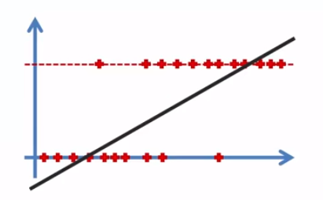
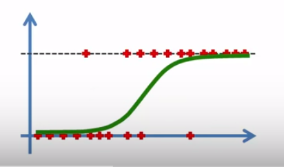

Here is my practice with the infamous Titanic dataset, but instead of checking against my training data, I actually submitted it to Kaggle for a score. Some methods I used here were Logistic Regression, Random Forests, K-Nearest-Neighbors, and Gaussian Naive Bayes, with Random Forests winning out.
Link: New Titanic Notebook
The Titanic Kaggle Competition is an introductory machine learning dataset, and I am building on my last Titanic practice. I essentially cleaned the data the same way as the last Titanic practice, but this time I used different models from sklearn.
We went over this last time in my last post, but here is the Logistic Regession Overview
Logistic regression: essentially using the best fitting line for boolean values.
Quick Logistic Regression Overview:
The linear function is defined as: $$y= B_0 + B_1X$$
Linear graph:
We then use y from the linear regression to plug into the sigmoid function:
Sigmoid function: $$p = {{1}\over{1+e^{-y}}}$$We then plug in p into:
$$ln({{p}\over{1-p}})=B_0 + B_1X$$Which turns into:
Logistic Graph: